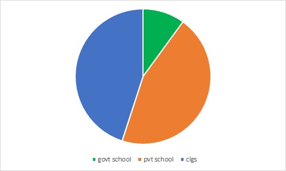

WEB GIS
PORTFOLIO

MANHOLES
Information
Place name: Vasavi nagar, Ramanthapur, Hyderabad.
Survey Area: 0.5km radius.
Surveying process:
i) We have done survey on manholes. By this survey we have come to know that in many areas manholes are opened and semi-opened, leaked.
ii)There are many places in which we cannot do survey due to occupied or covered manholes by over construction and street vendors.
iii)There are more no. of closed manholes when compared with open or semi-open.
WATER STAGNATION
WATER STAGNATION
Water stagnation occurs when water stops flowing.When this happens it can
become an environmental hazard.
Too much standing water that isn’t draining
can damage flooring and foundations, as well as creating a perfect breeding
ground for mosquitoes that are known to carry very harmful diseases.
THE DANGERS OF STAGNANT WATER
Stagnant water attracts rodents and insects.
As it soaks into a building’s structure, it damages wood, drywall and concrete.
The odor spreads from floor to ceiling.
Stagnant water also hosts dangerous microbial pathogens.
i) Bacteria including salmonella, staphylococcus and E. coli
ii) Viruses such as Norwalk virus, hepatitis E. and rotavirus
iii) Parasites such as cryptosporidium, E. histolytica and giardia
iv) Unhealthy mycotoxins released by toxic black mold fungus
ACCIDENT SPOTS
WHAT IS ACCIDENT?
An unfortunate incident that happens unexpectedly and unintentionally,
typically resulting in damage or injury.
WHY DO ACCIDENTS OCCUR?
Most of the fatal accidents occur due to over speeding. ...
Faster vehicles are more prone to accident
than the slower one and
the severity of accident will also be more
in case of faster the severity of accident will also be more in case of faster vehicles.
Higher the speed, greater the risk.
HOW TO PREVENT FROM ACCIDENTS?
1.Develop the right attitude about driving. Many teen auto accidents
are a result of attitude and maturity, not skills or knowledge. Make a
commitment to yourself to practice a responsible attitude about driving. You're
controlling over 3,000 pounds of fast-moving metal, and you owe it to
yourself, your passengers and other drivers to drive responsibly.
2.Get as much supervised practice driving as possible. Your parents
should take an active role in your practice driving. Make a firm schedule with
them and stick to it. And keep it up until you take your test to get a license. Many
states now have graduated licensing laws. To learn about the laws in your state visit
the Insurance Institute for Highway Safety.
3.ALWAYS wear your safety belt. Get into the habit of wearing a safety
belt whenever you are in a car, whether as a driver or a passenger - no exceptions.
TRANSPORTATION
WHAT IS TRANSPORTATION?
The movement of goods and persons from place to place and the various means
by which such movement is accomplished. The growth of the ability—and the need—to
transport large quantities of goods or numbers of people over long distances at high
speeds in comfort and safety has been an index of civilization and in particular of
technological progress.
Various Modes of Transport Offered by Transport Companies:
1. Road Transport- It is the most preferred and offered mode of transport by transport
agents and companies especially for short distance shipping.
2. Rail Transport – This is the second most preferred mode due to its large carrying capacity.
3. Air Transport – The fastest means of transport to ship goods to distant places.
4. Water Transport – This one is least preferred due to its slow speed but a very low-cost
means of transport for both long and short distance.
Benefits of Availing Transportation Services from Transport Agents:
In Madhapur, Hyderabad transport agents hold immense experience and
have a team that can efficiently take care of all the transportation services required.
However, following are some benefits of hiring an agent or a goods carrier
in Hyderabad: Loading and unloading facilities. Management by team
of expert professionals. Doorstep delivery services. Quality, on time, and
trustworthy transport services. Continuous updates and/or tracking of the
transported goods. Transparent billing system. Good customer service.
EDUCATIONAL INTITUTES
Survey On Educational Institutions In Madhapur:
The Institutional Areas designation acknowledges the important role of the City’s institutions and their contribution to community-based initiatives.
The Institutional Zone category permits uses associated with the Institutional Areas designation in the Official Plan.
The City recognizes the opportunities and services provided by our institutional partners by further identifying Institutional Areas which form a concentration of Education,
Health and Research activity.
However, because of their differing roles, purposes, and relationships with regard to charter schools and the Commission and the small sample size, data collected
from these stakeholders are not specifically called out in the summary analyses in this report.
